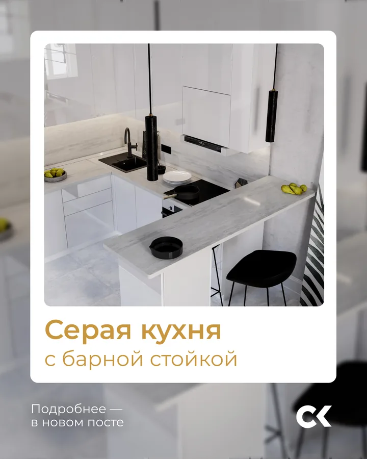
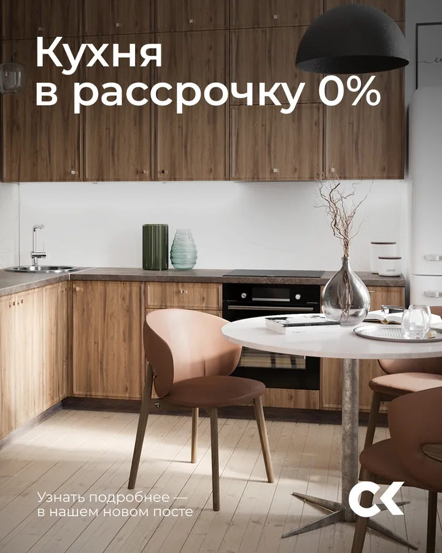
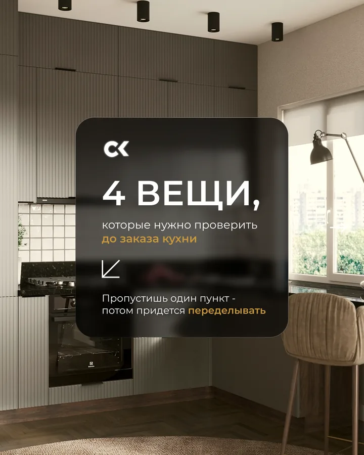

Разбор реального проекта · «Саратов Кухни»
Контент‑план без случайных тем: разбираем месяц из 15 публикаций
Хороший план не начинается с вопроса «что бы сегодня выложить?». Сначала определяются задачи: заинтересовать, помочь выбрать, показать продукт, снять сомнения и вовремя предложить следующий шаг.



Сначала задача месяца
Не «напомнить о себе», а помочь пройти путь выбора
Кухню покупают редко, долго сравнивают и боятся ошибиться. Поэтому один и тот же призыв «закажите у нас» не построит доверие.
Дать ориентиры
Объяснить, что проверить до заказа, как устроены фасады, планировка, хранение и фурнитура.
Показать выбор
Познакомить с готовыми решениями, разными стилями, цветами, размерами и моделями.
Снизить тревогу
Разобрать мифы, показать порядок замера и проекта, сделать следующий шаг понятным.
Пять рубрик
Каждая отвечает на свой вопрос покупателя
Рубрики нужны не для красивых названий в таблице. Они не дают плану превратиться только в каталог или только в советы.
Польза
«Как выбрать и что проверить?» Помогает разобраться и даёт повод сохранить материал.
Наши работы
«Как это выглядит в реальности?» Показывает разные площади, цвета и планировки.
Витрина продукта
«Что можно заказать?» Знакомит с моделями, стилями и ценовыми ориентирами.
Мифы
«Не переплачу ли я?» Разбирает сомнения и объясняет особенности заказа.
Оффер
«Что делать дальше?» Предлагает замер, проект или обращение за условиями.
Все 15 запланированных публикаций
Темы чередуются, но продолжают один разговор
План идёт от полезного входа и знакомства с продуктом к снятию сомнений, конкретным решениям и предложению обратиться.
- Как выбрать кухню и не переделывать через годПольза · доверие и сохранения · пост
- Двухцветная классика на годыНаши работы · показать результат · пост
- Модель Beverly — тёплая классикаВитрина продукта · познакомить с моделью · пост
- Кухня на заказ = переплатаМифы · разобрать сомнение · пост
- Бесплатный замер и 3D‑проектОффер · предложить понятный первый шаг · пост + мини‑прогрев
- Маленькая кухня‑студияНаши работы · снять страх маленькой площади · карусель
- Что проверить перед заказом кухниПольза · дать сохраняемый чек‑лист · карусель
- Кухня без ручек с профилем GolaВитрина продукта · показать решение · пост
- Серая угловая кухня с барной стойкойНаши работы · показать планировку · пост
- Мифы о кухнях на заказМифы · разобрать несколько возражений · карусель
- Модели, которые выбирают чаще всегоВитрина продукта · помочь сравнить · карусель
- Из чего делают фасады кухниПольза · помочь в выборе материала · пост
- Зелёная кухня без страха цветаНаши работы · показать цвет в деталях · карусель
- Модель Provence — светлая классикаВитрина продукта · познакомить с моделью · пост
- Кухня в рассрочку 0%Оффер · предложить обращение · пост
Логика порядка
Продажа не начинается и не заканчивается одним оффером
В течение месяца полезные, продуктовые и продающие материалы поддерживают друг друга.
Познакомить и снять первый барьер
Совет по выбору → реальная работа → модель → разбор переплаты → бесплатный замер и проект.
Смысл: предложение появляется после пользы, примера и ответа на возражение.
Помочь примерить решение на себя
Маленькая площадь, чек‑лист, кухня без ручек, угловая планировка, мифы и подборка моделей.
Смысл: человек видит разные ситуации и лучше понимает собственный запрос.
Укрепить выбор и дать следующий шаг
Материалы фасадов → смелый цвет → ещё одна модель → условия рассрочки.
Смысл: финальный оффер не висит в пустоте, а продолжает накопленное знакомство.
Почему именно 5 каруселей
Дополнительные слайды получили только сложные темы
Карусель не добавляли к каждому посту. Она нужна там, где человеку важно увидеть несколько шагов, вариантов, аргументов или деталей.
 7 слайдов · наши работы
7 слайдов · наши работы
Маленькая кухня‑студия
Один кадр не показывает, как использованы площадь, хранение и разные зоны. Слайды дают рассмотреть решение частями.

6 слайдов · пользаЧто проверить до заказа
Планировка, фасады, фурнитура и хранение требуют отдельных объяснений. Последний экран предлагает сохранить чек‑лист.
 7 слайдов · мифы
7 слайдов · мифы
Мифы о кухнях на заказ
Каждое сомнение получает отдельный ответ. Так аргументы не превращаются в мелкий текст на одном перегруженном экране.
 7 слайдов · витрина
7 слайдов · витрина
Модели, которые выбирают чаще
Несколько стилей и ценовых ориентиров можно сравнить внутри одной публикации, не отправляя человека в длинный каталог.
 7 слайдов · наши работы
7 слайдов · наши работы
Зелёная кухня без страха цвета
Разные ракурсы и детали помогают не просто увидеть цвет, а представить, как он работает в реальном интерьере.
Слайда, но не ради объёма
Пять тем стали каруселями, потому что один экран обрезал бы важную часть решения. Остальные десять тем остались обычными постами.
Как выбрать между постом и каруселью →Мини‑прогрев к публикации 05
Истории не живут отдельно от контент‑плана
Пять экранов подводят к посту о бесплатном замере и 3D‑проекте: сначала интерес, затем процесс, снятие страха и место для репоста самой публикации.
Истории создают контекст
До встречи с постом человек понимает, зачем нужен замер и что он получит после него.
Пост хранит подробности
Основная публикация остаётся в ленте и раскрывает предложение подробнее.
Репост связывает форматы
Пятый экран специально оставлен под публикацию — мини‑прогрев приводит к ней, а не обрывается отдельно.
Плановый календарь
Ритм виден до начала выхода материалов
Публикации запланированы каждые два дня в 21:47 — с 5 августа по 2 сентября 2026 года. Это план, а не утверждение, что все материалы уже вышли.
Август 2026
Как выбрать кухню
Классика
«Беверли»
Цена заказа
Замер и проект
Маленькая кухня
4 проверки
Без ручек
Серая кухня
Мифы
Частый выбор
Фасады
Зелёная кухня
«Прованс»
Сентябрь 2026
Рассрочка 0%
Ритм без провалов
Клиент заранее видит все даты и не ищет тему в день публикации.
Форматы чередуются
Посты, карусели, польза, работы и офферы не собираются в однообразные серии.
План можно проверить
До запуска видно, не слишком ли много продаж, одинаковых тем или сложных материалов подряд.
Результат проекта
Готовый контент‑месяц и его состав
План объединяет темы, тексты, визуалы, карусели, сторис и календарь выпуска.
Готовый продукт
- 15 утверждённых тем и полные тексты;
- 15 реальных визуалов;
- пять каруселей со всеми 34 слайдами;
- четыре готовых экрана сторис и рамка под репост;
- плановый календарь и единая система рубрик.
Отдельная аналитика
- — продажи и заявки от публикаций;
- — динамика охватов, подписчиков и вовлечённости;
- — окупаемость контента;
- — выполнение планового графика.
Эти показатели оцениваются отдельно по данным площадок и бизнеса.
Посмотреть без сокращений
Откройте весь месяц: план, 15 текстов, ленту, карусели, истории и календарь
В полном кейсе можно переключать представления и рассмотреть каждый подготовленный материал.